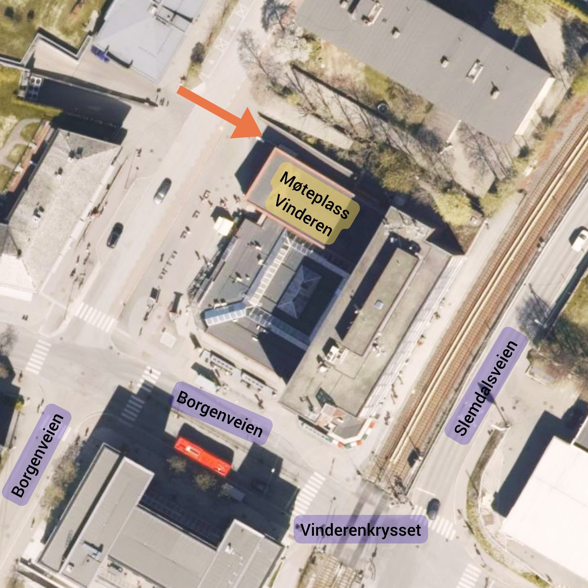
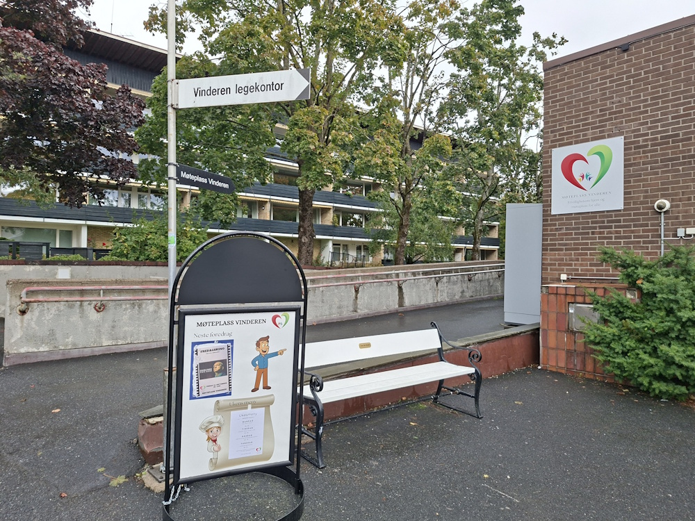

Møteplass Vinderen Kafé er et sted der folk møtes på tvers av alder, bakgrunn, interesser og politiske ståsteder. Her er det rom for både korte og lange samtaler, og du er like velkommen enten du kommer alene, med en venn, med barnebarn eller med naboen. Vi tror at gode møteplasser bygger fellesskap - og kafeen er et slikt sted.
I kafeen selger vi smørbrød, kaker, vafler og en varm rett hver dag. Alt er rimelig priset, slik at terskelen for å ta turen innom skal være lav. Kafeen er åpen mandag til fredag fra kl. 10:00 til 14:00, og det er helt uformelt: Du kommer når det passer deg, finner deg en plass og slår deg ned.
Hva skjer?
Det skjer ulike aktiviteter i huset hver dag - alt fra kurs og samlinger til sosiale møteplasser. Kafeen er midtpunktet: et naturlig sted å møtes før, under eller etter aktivitetene. Noen kommer for å lese avisen i fred og ro, andre for å treffe kjente, og mange blir kjent med nye mennesker over en kopp kaffe.
- Hyggelig kafémiljø med smørbrød, kaker, vafler og dagens varme rett.
- Åpen møteplass på tvers av generasjoner, interesser og livssituasjoner.
- Mulighet til å kombinere kafeen med andre aktiviteter i huset.
- Lav terskel - du trenger ikke melde deg på, bare kom innom.
- Et sted der du kan finne både ro, fellesskap og gode samtaler.
Praktisk informasjon
Sted: Møteplass Vinderen Kafé, Slemdalsveien 72. Inngangen er på oversiden av Vinderensenteret.
Tid: Mandag-fredag kl. 10:00-15:00. (Kjøkkenet stenger 14:30)
Pris: Rimelige priser på smørbrød, kaker, vafler og varm rett.
Påmelding: Ingen påmelding - det er bare å komme innom i åpningstiden.
Målgruppe: Åpent for alle som ønsker et hyggelig sted å være, enten du vil ha en stille stund, treffe andre eller kombinere besøket med aktiviteter i huset.
Her finner du oss:

